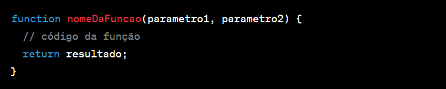
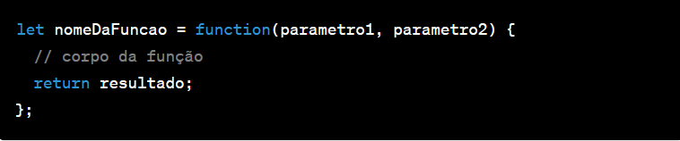
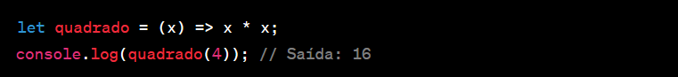
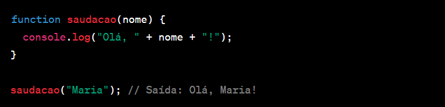
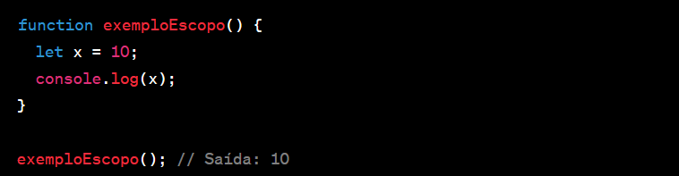

As funções em JavaScript são blocos de código reutilizáveis que executam uma determinada tarefa. Elas ajudam a organizar e estruturar o código, permitindo que você divida seu programa em partes menores e mais gerenciáveis. Com funções, você pode encapsular lógica, reutilizá-la e chamá-la sempre que necessário.
Sintaxe de Functions em JavaScript:
As funções em JavaScript podem ser declaradas de várias maneiras, mas todas seguem essa sintaxe:
Declaração de função:
Você pode declarar uma função usando a palavra-chave function. A sintaxe básica é a seguinte:

Expressão de função:
Você também pode usar expressões de função, onde a função é atribuída a uma variável:

Arrow Functions:
A partir do ECMAScript 6 (ES6), as arrow functions foram introduzidas para uma sintaxe mais concisa:

Parâmetros de Função:
As funções podem aceitar parâmetros. Esses parâmetros são valores que a função espera receber quando é chamada. Exemplo:

Escopo de Variáveis:
As variáveis declaradas dentro de uma função têm escopo local,
o que significa que elas não são acessíveis fora da função.

Funções como Objeto:
Em JavaScript, funções são objetos de primeira classe, o que significa que você pode tratá-las como objetos.
Elas podem ser atribuídas a variáveis, passadas como argumentos para outras funções, etc.